import polars as pl
import plotnine_polars as p9
import socviz_pl as sv
from plotnine_polars import aes7 Draw Maps
This chapter follows Chapter 7 of Healy (2026), translating the main map examples to Python, Polars, and plotnine_polars. The Python setup here is intentionally lightweight: we use some preprojected polygon tables from socviz_py and draw them with ordinary plotnine polygon layers (.geom_polygon()).
That keeps the data work in Polars and avoids adding a full stack of geospatial tools in an introductory chapter. Appendix A includes more details on how to construct these datasets.1
election24 = sv.load_data("election24").with_columns(
fips_str=pl.col("fips").cast(pl.Utf8).str.zfill(2),
region=pl.col("state").str.to_lowercase(),
)7.1 Draw a Map of US States
The first thing to remember about spatial data is that you do not have to represent it spatially. Here are the 2024 US presidential election data as a faceted dot plot. This view makes the margins by state more directly comparable than a two-color choropleth would.
election24.select(
"state", "total_vote", "r_points", "pct_trump", "party", "census"
).sample(5, seed=7)
shape: (5, 6)
| state | total_vote | r_points | pct_trump | party | census |
|---|---|---|---|---|---|
| str | f64 | f64 | f64 | str | str |
| "Arizona" | 3.390161e6 | 5.52723 | 0.5222 | "Republican" | "West" |
| "Delaware" | 512912.0 | -14.701742 | 0.4179 | "Democratic" | "South" |
| "Ohio" | 5.767788e6 | 11.207364 | 0.5514 | "Republican" | "Midwest" |
| "Massachusetts" | 3.473668e6 | -25.195701 | 0.3602 | "Democratic" | "Northeast" |
| "Wisconsin" | 3.422918e6 | 0.858829 | 0.496 | "Republican" | "Midwest" |
census_order = (
election24
.filter(pl.col("st") != "DC")
.group_by("census")
.agg(pl.col("r_points").median())
.sort("r_points")
.get_column("census")
.to_list()
)
election24 = election24.with_columns(
pl.col("census").cast(pl.Enum(census_order))
)p9.theme_set(sv.theme_socviz())
party_colors = ["#2E74C0", "#CB454A"](
election24
.filter(pl.col("st") != "DC")
.ggplot(aes(x="r_points", y="reorder(state, r_points)", color="party"))
.geom_vline(xintercept=0, color="#4D4D4D")
.geom_point(size=2)
.scale_color_manual(values=party_colors)
.scale_x_continuous(
breaks=[-30, -20, -10, 0, 10, 20, 30, 40],
labels=[
"30\n(Harris)", "20", "10", "0",
"10", "20", "30", "40\n(Trump)"
],
)
.facet_grid("census", scales="free_y", space="free_y")
.add_guides(color="none")
.labs(x="Point Margin", y="")
.add_theme(
text=p9.element_text(family="DIN Condensed",
size=7),
figure_size=(2.5, 10)
)
)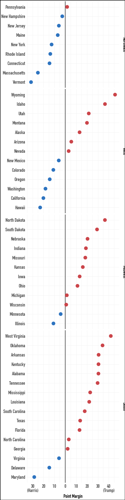
In R, the chapter begins by loading state outlines from the maps package. The Python version uses the same state outline data exported from R’s ggplot2::map_data("state"). The result is an ordinary polygon table with one row per outline vertex and a lower-case region column for joining to state-level data.
us_states = sv.load_data("us_states")
us_states
shape: (15_537, 6)
| long | lat | group | order | region | subregion |
|---|---|---|---|---|---|
| f64 | f64 | f64 | i32 | str | str |
| -87.462006 | 30.389681 | 1.0 | 1 | "alabama" | null |
| -87.484932 | 30.372492 | 1.0 | 2 | "alabama" | null |
| -87.525032 | 30.372492 | 1.0 | 3 | "alabama" | null |
| -87.530762 | 30.332386 | 1.0 | 4 | "alabama" | null |
| -87.570869 | 30.326654 | 1.0 | 5 | "alabama" | null |
| … | … | … | … | … | … |
| -106.856628 | 41.012318 | 63.0 | 15595 | "wyoming" | null |
| -107.309265 | 41.018047 | 63.0 | 15596 | "wyoming" | null |
| -107.922333 | 41.018047 | 63.0 | 15597 | "wyoming" | null |
| -109.056786 | 40.989399 | 63.0 | 15598 | "wyoming" | null |
| -109.051064 | 40.995129 | 63.0 | 15599 | "wyoming" | null |
(
us_states
.ggplot(aes(x="long", y="lat", group="group"))
.geom_point(size = 0.1)
.add_theme(
text=p9.element_text(family="DIN Condensed",
size=7),
figure_size=(2.5, 1.5)
)
)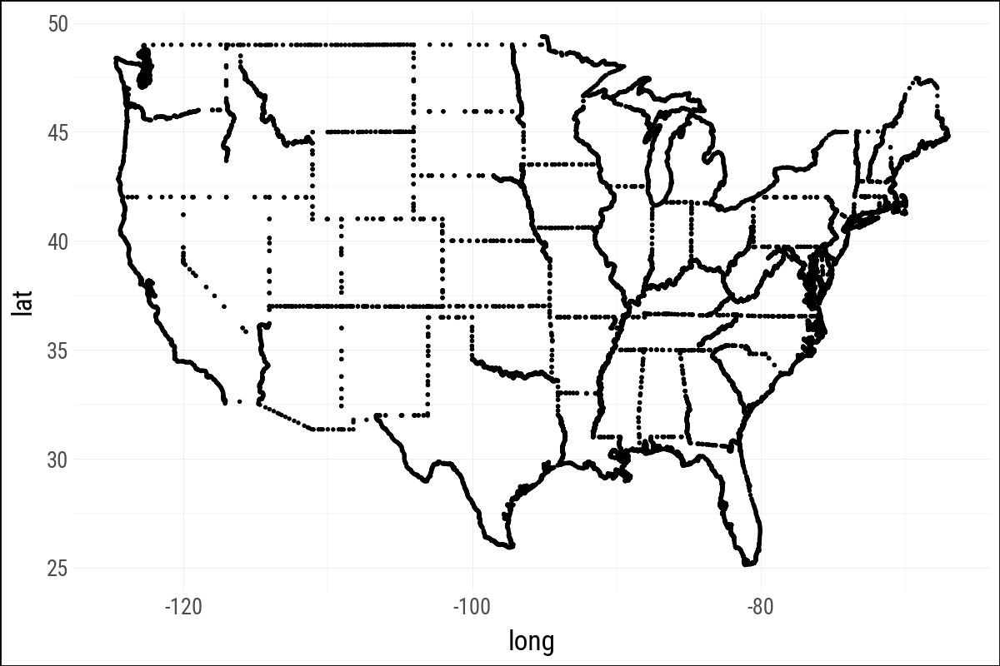
(
us_states
.ggplot(aes(x="long", y="lat", group="group"))
.geom_polygon(fill="white", color="black")
.add_theme(
text=p9.element_text(family="DIN Condensed",
size=7),
figure_size=(2.5, 1.5)
)
)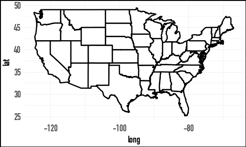
from pyproj import Transformer
def albers_transform(long, lat):
albers = Transformer.from_crs(
"EPSG:4326",
"+proj=aea +lat_1=39 +lat_2=45 +lon_0=-96"
" +datum=WGS84 +units=m +no_defs",
always_xy=True,
)
def _transform(series_list):
long, lat = series_list
x, y = albers.transform(long, lat)
return pl.DataFrame({"x": x, "y": y}).to_struct("coords")
return pl.map_batches([long, lat], _transform).alias("coords")
us_states_albers = (
us_states
.with_columns(
albers_transform(pl.col("long"), pl.col("lat"))
)
.unnest("coords")
)At this point, I set the plotnine theme to sv.theme_socviz_map(). This theme is modelled on the theme in the R package socviz and mostly removes elements that don’t have as much use with maps.
p9.theme_set(sv.theme_socviz_map())Note that the version of the following plot in Healy (2026) includes axis labels. Because we have projected the latitude and longitude into long and lat and the latter variables don’t have an easy-to-interpret scale, there is already little value in including these values on the plot.
(
us_states_albers
.ggplot(aes(x="x", y="y", group="group", fill="region"))
.geom_polygon(color="gray", size=0.1)
.coord_equal()
.add_guides(fill="none")
.add_theme(figure_size=(2.5, 1.9))
)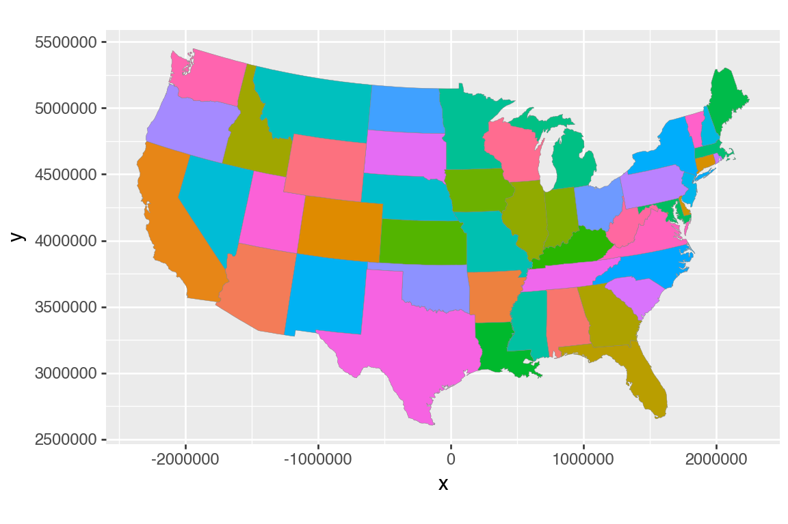
In the code producing Figure 7.4, we use .coord_equal() to reflect the idea that 1 unit of distance should map (approximately) to the same unit on the plot whether that distance is a north-south direction or a east-west one.
7.2 Use Simple Features to Draw Maps
(
election24
.select("state", "st", "fips", "total_vote",
"winner", "pct_margin")
)
shape: (51, 6)
| state | st | fips | total_vote | winner | pct_margin |
|---|---|---|---|---|---|
| str | str | str | f64 | str | f64 |
| "Alabama" | "AL" | "01" | 2.26509e6 | "Trump" | 0.304714 |
| "Alaska" | "AK" | "02" | 338177.0 | "Trump" | 0.131387 |
| "Arizona" | "AZ" | "04" | 3.390161e6 | "Trump" | 0.055272 |
| "Arkansas" | "AR" | "05" | 1.182676e6 | "Trump" | 0.30637 |
| "California" | "CA" | "06" | 1.5865475e7 | "Harris" | -0.201348 |
| … | … | … | … | … | … |
| "Virginia" | "VA" | "51" | 4.505941e6 | "Harris" | -0.05777 |
| "Washington" | "WA" | "53" | 3.924243e6 | "Harris" | -0.182182 |
| "West Virginia" | "WV" | "54" | 762582.0 | "Trump" | 0.41864 |
| "Wisconsin" | "WI" | "55" | 3.422918e6 | "Trump" | 0.008588 |
| "Wyoming" | "WY" | "56" | 269048.0 | "Trump" | 0.457561 |
Rather than using states_sf from the socviz R package, I grab similar data from the geodatasets package.
import geodatasets
path = geodatasets.get_path("geoda.ncovr")I then load the spatial extension of DuckDB.
import duckdb
con = duckdb.connect()
con.sql("INSTALL spatial")
con.sql("LOAD spatial")I use DuckDB to process the data into the required form. The states_sf data set packaged with socviz_py is built from this object.
states = con.sql(f"""
SELECT
STATE_NAME AS state,
ST_Union_Agg(geom) AS geom
FROM ST_Read('{path}')
GROUP BY state
ORDER BY state
""")con.sql("""
SELECT
state,
left(ST_AsText(geom), 30) || '...' AS geom
FROM states
ORDER BY state
LIMIT 10
""")┌──────────────────────┬───────────────────────────────────┐
│ state │ geom │
│ varchar │ varchar │
├──────────────────────┼───────────────────────────────────┤
│ Alabama │ POLYGON ((-87.62572479248047 3... │
│ Arizona │ POLYGON ((-113.32837677001953 ... │
│ Arkansas │ POLYGON ((-93.47889709472656 3... │
│ California │ MULTIPOLYGON (((-122.413551330... │
│ Colorado │ POLYGON ((-106.88977813720703 ... │
│ Connecticut │ POLYGON ((-73.72566223144531 4... │
│ Delaware │ POLYGON ((-75.09309387207031 3... │
│ District of Columbia │ POLYGON ((-77.00823211669922 3... │
│ Florida │ MULTIPOLYGON (((-83.1747817993... │
│ Georgia │ MULTIPOLYGON (((-84.9378509521... │
└──────────────────────┴───────────────────────────────────┘
10 rows 2 columnsstates_sf = (
sv.load_data("states_sf")
.with_columns(
albers_transform(pl.col("long"), pl.col("lat"))
)
.unnest("coords")
)states_sf = sv.load_data("states_sf")
elections24_sf = (
election24
.join(states_sf, on="state", how="inner")
.filter(pl.col("long").max().over("group") >= -2.2e6)
)Once the data are joined, we can fill the polygons by the winning party.
(
elections24_sf
.ggplot(aes(x="long", y="lat", group="group", fill="party"))
.geom_polygon(color="white", size=0.05)
.coord_equal()
.scale_fill_manual(values=party_colors)
.labs(fill=None)
.add_theme(
legend_direction="horizontal",
legend_position_inside=(0.35, -0.1),
legend_title=p9.element_text(family="DIN Condensed", size=7),
legend_text=p9.element_text(family="DIN Condensed", size=7),
figure_size=(2.5, 2.1)
)
)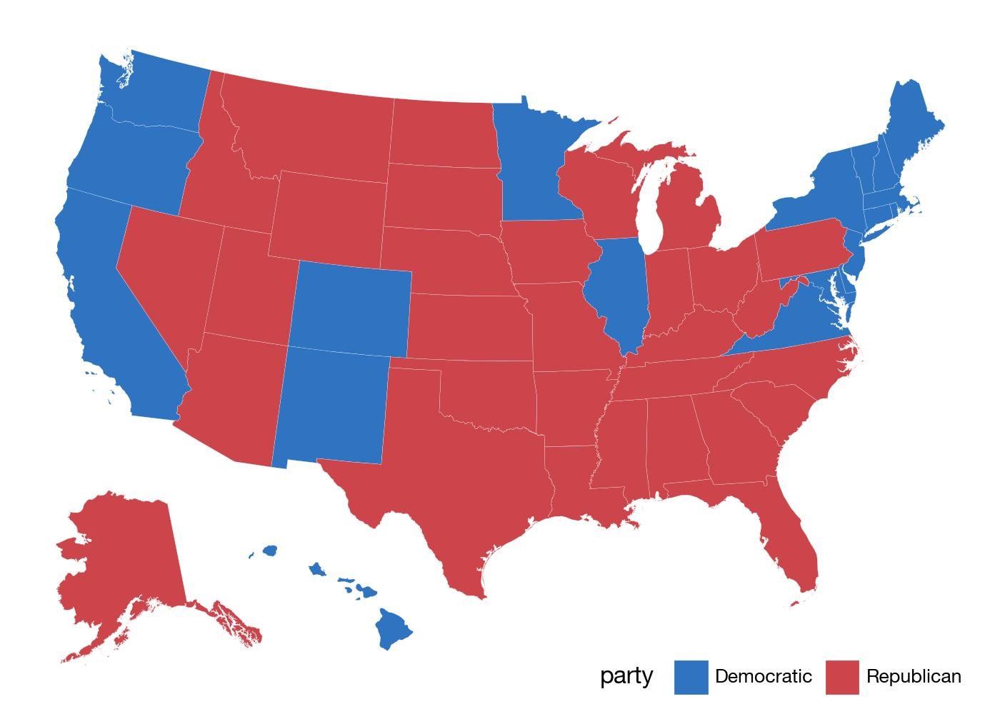
The important practical point is the same as in ggplot: make sure the keys used for the join really match. Here those keys are the lower-case state names in region.
With the map data frame in place, we can map continuous variables too. The default continuous fill is not ideal for election data:
(
elections24_sf
.ggplot(aes(x="long", y="lat", group="group", fill="pct_trump"))
.geom_polygon(color="white", size=0.05)
.coord_equal()
.labs(fill="Percent")
.add_theme(
legend_direction="horizontal",
legend_key_size=8,
legend_position_inside=(0.5, -0.1),
legend_title=p9.element_text(family="DIN Condensed", size=7),
legend_text=p9.element_text(family="DIN Condensed", size=7),
figure_size=(2.5, 2.1)
)
)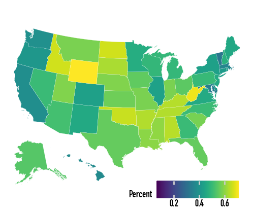
So we specify the gradient directly:
(
elections24_sf
.ggplot(aes(x="long", y="lat", group="group", fill="pct_trump"))
.geom_polygon(color="white", size=0.05)
.coord_equal()
.scale_fill_gradient(low="white", high="#CB454A", labels=lambda lst: [f"{v:.0%}" for v in lst])
.labs(fill="Percent")
.add_theme(
legend_direction="horizontal",
legend_key_size=8,
legend_position_inside=(0.5, -0.1),
legend_title=p9.element_text(family="DIN Condensed", size=7),
legend_text=p9.element_text(family="DIN Condensed", size=7),
figure_size=(2.5, 2.1)
)
)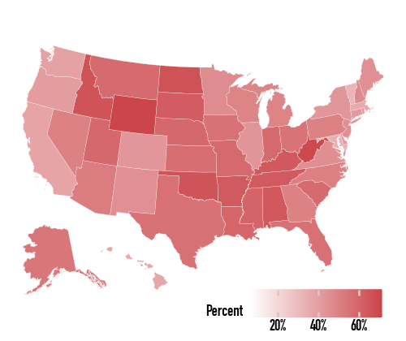
For margins, a diverging scale is more appropriate. The d_points variable is positive when Harris’s margin is larger and negative when Trump’s is larger.
(
elections24_sf
.filter(pl.col("st") != "DC")
.ggplot(aes(x="long", y="lat", group="group", fill="d_points"))
.geom_polygon(color="white", size=0.05)
.coord_equal()
.scale_fill_gradient2(low="red", mid="#756BB1", high="blue")
.labs(fill="Percent")
.add_theme(
legend_direction="horizontal",
legend_position_inside=(0.6, 0.0),
figure_size=(7, 5)
)
)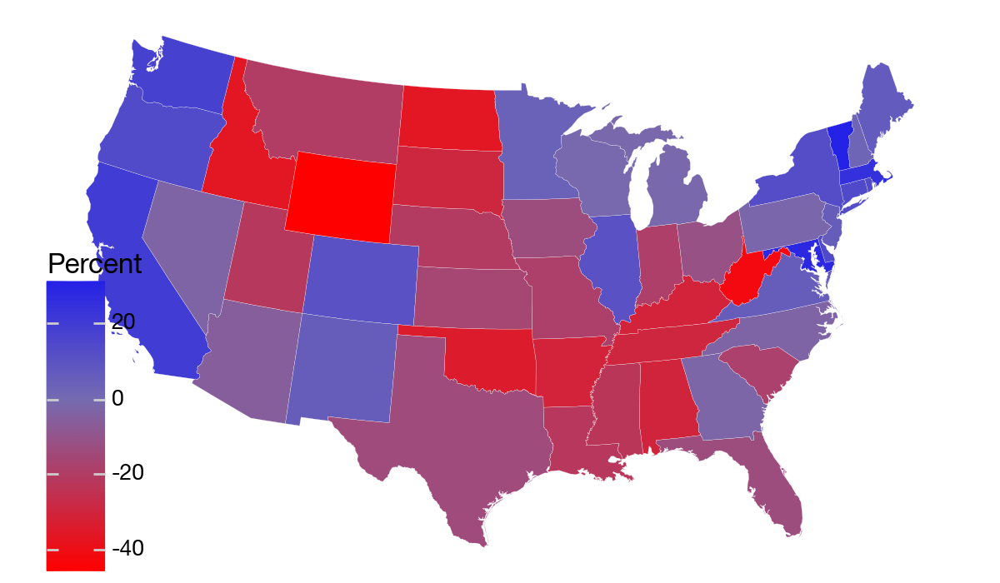
7.3 America’s Ur-Choropleths
county_data = sv.load_data("county_data")
county_map = sv.load_data("county_map").with_columns(
state_fips=pl.col("id").str.slice(0, 2),
)The county map and county data objects join on the county FIPS code. This gives us the same large polygon table used in the book, with county-level variables attached.
(
county_data
.select("id", "name", "state", "pop_dens", "pct_black")
.sample(5, seed=7)
)
shape: (5, 5)
| id | name | state | pop_dens | pct_black |
|---|---|---|---|---|
| str | str | str | str | str |
| "05123" | "St. Francis County" | "05" | "[ 10, 50)" | "[50.0,85.3]" |
| "13307" | "Webster County" | "13" | "[ 10, 50)" | "[25.0,50.0)" |
| "42017" | "Bucks County" | "42" | "[ 1000, 5000)" | "[ 2.0, 5.0)" |
| "27053" | "Hennepin County" | "27" | "[ 1000, 5000)" | "[10.0,15.0)" |
| "54071" | "Pendleton County" | "54" | "[ 0, 10)" | "[ 2.0, 5.0)" |
county_full = (
county_map
.filter(pl.col("long").max().over("group") >= -2.2e6)
.join(county_data, on="id", how="left")
)county_full = county_full.with_columns(
pop_dens_ord=(pl.col("pop") / pl.col("area_sqmi")).cut([10, 50, 100, 500, 1000, 5000]),
pct_black_ord=(pl.col("black") / pl.col("pop") * 100).cut([2.0, 5.0, 10.0, 15.0, 25.0, 50.0]),
)(
county_full
.ggplot(aes(x="long", y="lat", group="group", fill="pop_dens_ord"))
.geom_polygon(color="#F2F2F2", size=0.02)
.coord_equal()
.scale_fill_brewer(
palette="Blues",
labels=["0-10", "10-50", "50-100", "100-500", "500-1,000", "1,000-5,000", ">5,000"],
)
.labs(fill="Population per\nsquare mile")
.add_guides(fill=p9.guide_legend(nrow=1))
.add_theme(
legend_title=p9.element_text(family="DIN Condensed", size=7),
legend_text=p9.element_text(family="DIN Condensed", size=7),
)
)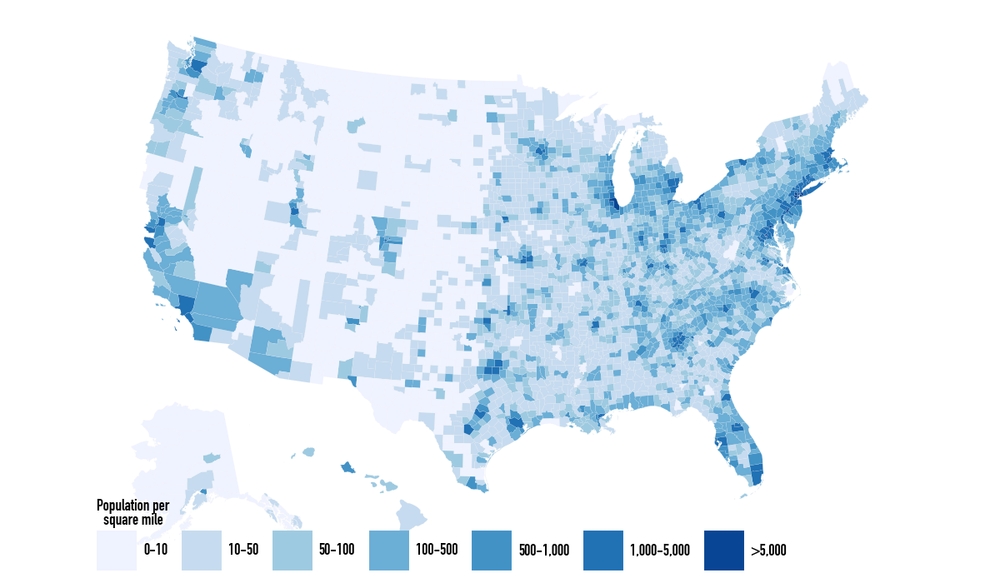
(
county_full
.ggplot(aes(x="long", y="lat", group="group", fill="pct_black_ord"))
.geom_polygon(color="#F2F2F2", size=0.02)
.coord_equal()
.scale_fill_brewer(palette="Greens")
.labs(fill="US Population,\nPercent Black")
.add_guides(fill=p9.guide_legend(nrow=1))
.add_theme(
legend_title=p9.element_text(family="DIN Condensed", size=7),
legend_text=p9.element_text(family="DIN Condensed", size=7),
)
)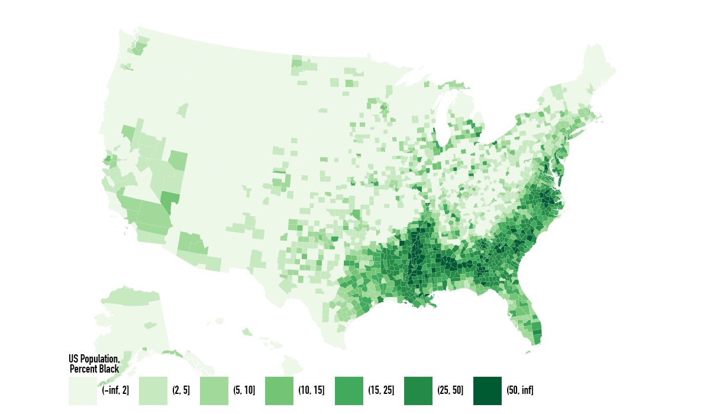
Population density and percent Black are the two background choropleths that explain, or at least complicate, many maps of the United States. The next pair of maps repeats the book’s comparison between binned gun-related suicide rates and reverse-coded population density.
orange_pal = ["#FEEDDE", "#FDD0A2", "#FDAE6B", "#FD8D3C", "#E6550D", "#A63603"]
orange_rev = list(reversed(orange_pal))(
county_full
.ggplot(aes(x="long", y="lat", fill="su_gun6", group="group"))
.geom_polygon(color="#F2F2F2", size=0.02)
.coord_equal()
.scale_fill_manual(values=orange_pal)
.labs(title="Gun-Related Suicides, 1999-2015", fill="Rate per 100,000 pop.")
.add_guides(fill=p9.guide_legend(nrow=1))
.add_theme(
legend_direction="horizontal",
legend_title=p9.element_text(family="DIN Condensed", size=7),
legend_text=p9.element_text(family="DIN Condensed", size=7),
)
)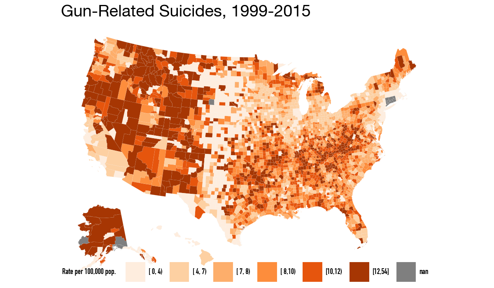
(
county_full
.ggplot(aes(x="long", y="lat", fill="pop_dens6", group="group"))
.geom_polygon(color="#F2F2F2", size=0.02)
.coord_equal()
.scale_fill_manual(values=orange_rev)
.labs(title="Reverse-coded Population Density", fill="People per square mile")
.add_guides(fill=p9.guide_legend(nrow=1))
.add_theme(
legend_direction="horizontal",
legend_title=p9.element_text(family="DIN Condensed", size=7),
legend_text=p9.element_text(family="DIN Condensed", size=7),
)
)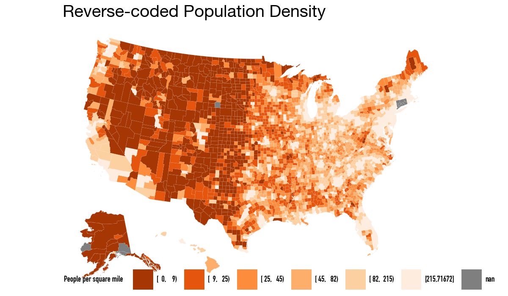
7.4 Statebins
The R chapter uses the statebins package. Here we build a small statebin grid directly as a Polars data frame and draw it with geom_tile(). This is not a replacement for a dedicated statebins library, but it is enough to show the idea with the same grammar of graphics.
state_grid = pl.DataFrame(
{
"st": [
"ME",
"WI", "VT", "NH",
"WA", "ID", "MT", "ND", "MN", "IL", "MI", "NY", "MA",
"OR", "NV", "WY", "SD", "IA", "IN", "OH", "PA", "NJ", "CT", "RI",
"CA", "UT", "CO", "NE", "MO", "KY", "WV", "VA", "MD", "DE",
"AZ", "NM", "KS", "AR", "TN", "NC", "SC", "DC",
"AK", "OK", "LA", "MS", "AL", "GA",
"HI", "TX", "FL",
],
"x": [
11,
6, 10, 11,
1, 2, 3, 4, 5, 6, 7, 9, 10,
1, 2, 3, 4, 5, 6, 7, 8, 9, 10, 11,
1, 2, 3, 4, 5, 6, 7, 8, 9, 10,
2, 3, 4, 5, 6, 7, 8, 9,
0, 4, 5, 6, 7, 8,
0, 4, 9,
],
"y": [
0,
1, 1, 1,
2, 2, 2, 2, 2, 2, 2, 2, 2,
3, 3, 3, 3, 3, 3, 3, 3, 3, 3, 3,
4, 4, 4, 4, 4, 4, 4, 4, 4, 4,
5, 5, 5, 5, 5, 5, 5, 5,
6, 6, 6, 6, 6, 6,
7, 7, 7,
],
}
)
election_bins = state_grid.join(election24, on="st", how="left")(
election_bins
.ggplot(aes(x="x", y="-y", fill="pct_trump"))
.geom_tile(color="white", size=1)
.geom_text(aes(label="st"), size=8, color="white")
.scale_fill_gradient(low="#FEE5D9", high="#A50F15", labels=lambda lst: [f"{v:.0%}" for v in lst])
.coord_equal()
.labs(fill="Percent Trump")
.add_theme(legend_position="bottom")
)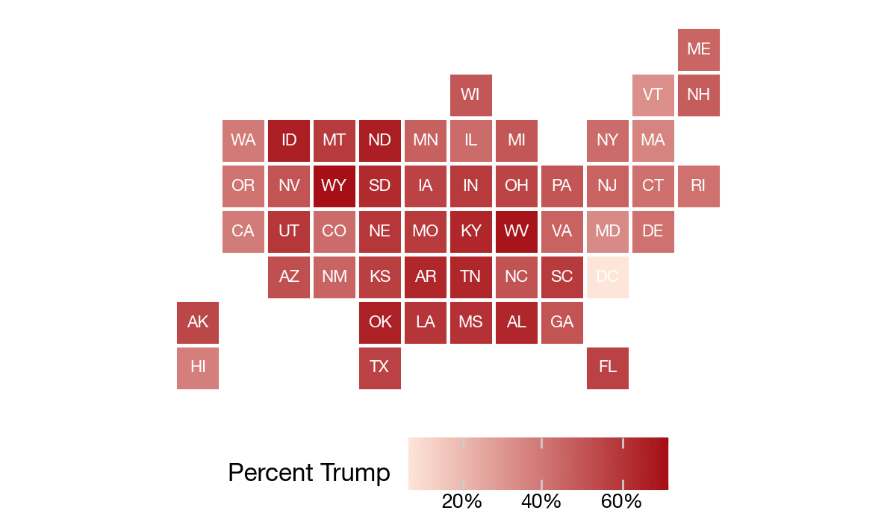
(
election_bins
.with_columns(color_party=pl.when(pl.col("party") == "Republican").then(pl.lit("Republican")).otherwise(pl.lit("Democrat")))
.ggplot(aes(x="x", y="-y", fill="color_party"))
.geom_tile(color="white", size=1)
.geom_text(aes(label="st"), size=8, color="white")
.scale_fill_manual(values={"Democrat": "#2E74C0", "Republican": "#CB454A"})
.coord_equal()
.labs(fill="Winner")
.add_theme(legend_position="bottom")
)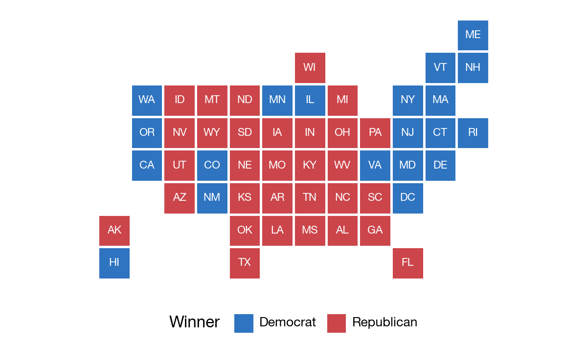
7.5 Small-Multiple Maps
The opiates data have state-level death rates observed over time. We merge them into the same state polygon frame and facet by year.
opiates = sv.load_data("opiates")opiates_link = (
election24
.with_columns(
pl.col("state").str.to_lowercase().alias("region")
)
.select("st", "state")
)(
states_sf
.filter(pl.col("long").max().over("group") >= -2.2e6)
.join(opiates_link, on="state", how="left")
.join(opiates, on="st", how="left")
.filter(pl.col("year").is_between(2006, 2020))
.with_columns(
pl.col("adjusted").cut(
breaks=[0, 10, 20, 30, 40, 50, 60, 70],
).cast(pl.String)
)
.ggplot(aes(x="long", y="lat", group="group", fill="adjusted"))
.geom_polygon(color="grey", size=0.05)
.coord_equal()
.scale_fill_cmap_d("plasma_r", na_value="white")
.facet_wrap("year", ncol=3)
.labs(
fill="Adjusted death rate per\n100,000 population",
title="Opiate-Related Deaths by State, 2006-2020",
)
.add_theme(
figure_size=(7, 10),
legend_direction="horizontal",
legend_position_inside=(0.0, -0.05),
legend_title=p9.element_text(family="DIN Condensed", size=7),
legend_text=p9.element_text(family="DIN Condensed", size=7),
)
.add_guides(fill=p9.guide_legend(nrow=1))
)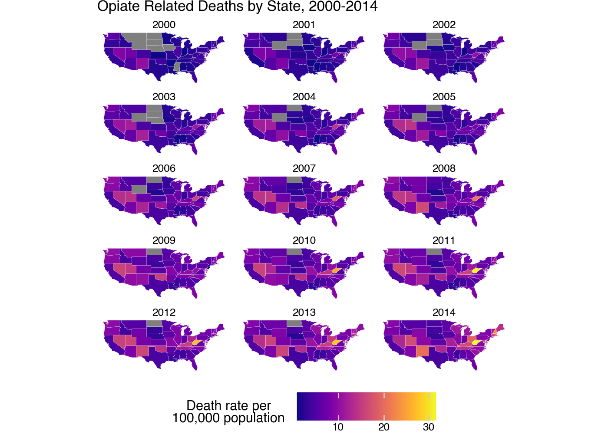
7.6 Is Your Data Really Spatial?
Even if data are collected in spatial units, a map may not be the clearest display. The same opiate data can be shown as time series, grouped by Census division. This makes the state trajectories and regional variation easier to compare.
p9.theme_set(sv.theme_socviz())<plotnine.themes.theme_minimal.theme_minimal at 0x120565810>(
opiates
.filter(pl.col("st") != "DC")
.ggplot(aes(x="year", y="adjusted", group="st"))
.geom_line(color="#B3B3B3")
.labs(x="Year", y="Rate per 100,000 population")
)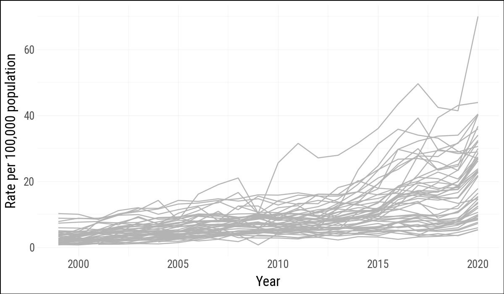
st_top_div = (
opiates
.filter(
pl.col("year") == pl.col("year").max(),
pl.col("st") != "DC"
)
.sort("adjusted", descending=True)
.group_by("division_name", maintain_order=True)
.head(2)
)division_means = (
opiates
.filter(pl.col("division_name").is_not_null())
.group_by("division_name")
.agg(pl.col("adjusted").mean().alias("division_mean"))
)
opiates_div = (
opiates
.filter(pl.col("division_name").is_not_null())
.join(division_means, on="division_name", how="left")
.with_columns(
pl.col("st").is_in(st_top_div["st"].to_list()).alias("top")
)
)
opiates_labels = (
opiates_div
.filter(pl.col("year") == pl.col("year").max().over("st"))
)(
opiates_div
.ggplot(aes(x="year", y="adjusted", color="top"))
.geom_line(aes(group="st"))
.scale_x_continuous(limits=(None, 2022))
.scale_color_manual(values=["#666666", "firebrick"])
.geom_label(
data=opiates_labels,
mapping=aes(x="year", y="adjusted", label="st", color="top"),
size=6,
nudge_x=1,
nudge_y=0.2,
label_size=0.3,
)
.facet_wrap("division_name", nrow=3)
.labs(
x="",
y="Rate per 100,000 population",
title="State-Level Opiate Death Rates by Census Division, 1999-2019",
)
.theme_minimal()
.add_theme(
legend_position="none",
strip_background=p9.element_blank(),
strip_text=p9.element_blank(),
figure_size=(8, 10),
)
)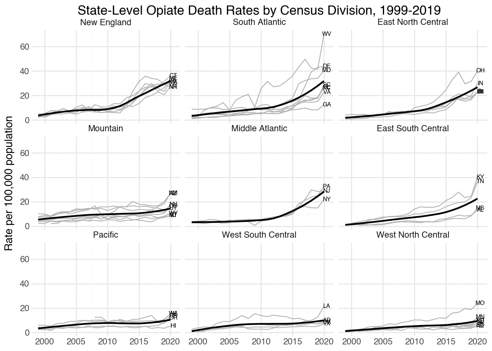
7.7 Where to Go Next
These examples use polygon tables as ordinary data frames, which is enough to reproduce the main lessons of the chapter. For more serious map work in Python, the next step would be a spatial data stack such as GeoPandas, Shapely, and PyProj. The conceptual warning remains the same: maps are compelling, but they are not always the clearest or most honest way to show spatially grouped social data.
In addition The code used to prepare the map-related Parquet files lives in the
data-raw/directory of thesocviz_pypackage.↩︎